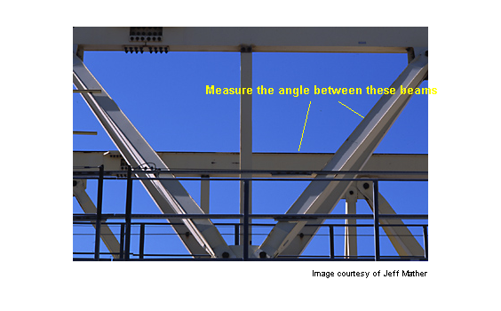
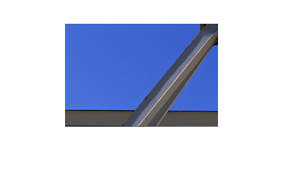
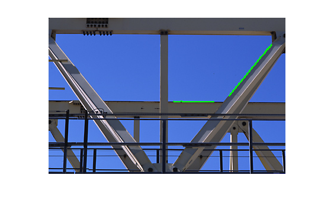
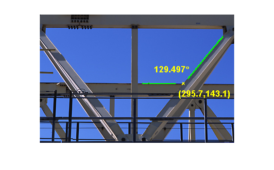

交点角度の測定
マシン ビジョン アプリケーションに共通の作業は、画像取得および画像処理手法を使ったハンズフリー測定です。目的は、境界トレース ルーチンである bwtraceboundary を使用して 2 つの ビームの角度と交点を測定することです。
目次
手順 1: イメージの読み込み
gantrycrane.png を読み込み、2 つの注目ビームを矢印で示します。これはブリッジを組み立てるときに使用するガントリー クレーンのイメージです。
RGB = imread('gantrycrane.png'); imshow(RGB); text(size(RGB,2),size(RGB,1)+15,'Image courtesy of Jeff Mather',... 'FontSize',7,'HorizontalAlignment','right'); line([300 328],[85 103],'color',[1 1 0]); line([268 255],[85 140],'color',[1 1 0]); text(150,72,'Measure the angle between these beams','Color','y',... 'FontWeight', 'bold');
手順 2: 関心領域の抽出
イメージを抽出し、前に選択したガントリー クレーンのビームのみを取得します。この手順は、2 つの金属ビームのエッジを抽出しやすくします。
% you can obtain the coordinates of the rectangular region using % pixel information displayed by imtool start_row = 34; start_col = 208; cropRGB = RGB(start_row:163, start_col:400, :); imshow(cropRGB) % Store (X,Y) offsets for later use; subtract 1 so that each offset will % correspond to the last pixel before the region of interest offsetX = start_col-1; offsetY = start_row-1;
手順 3: イメージのしきい値処理
続いて bwtraceboundary を使用してエッジ座標を抽出するために、イメージを白黒画像に変換します。
I = rgb2gray(cropRGB);
threshold = graythresh(I);
BW = im2bw(I,threshold);
BW = ~BW; % complement the image (objects of interest must be white)
imshow(BW)
手順 4: 各境界の始点の検出
bwtraceboundary ルーチンでは境界上に 1 つのポイントを指定する必要があります。このポイントは、境界のトレース プロセスの開始位置として使用します。
下のビームのエッジを抽出するには、イメージ内の列を選択し、バックグランド ピクセルからオブジェクト ピクセルに遷移が起きるまで確認します。後で bwtraceboundary ルーチンで使用できるように、この位置を保存しておきます。この手順を別のビームでも繰り返しますが、今度は横方向にトレースします。
dim = size(BW); % horizontal beam col1 = 4; row1 = min(find(BW(:,col1))); % angled beam row2 = 12; col2 = min(find(BW(row2,:)));
手順 5: 境界のトレース
bwtraceboundary ルーチンは、境界ポイントの (X, Y) 位置を抽出するために使用します。角度および交点の計算精度を最大にするには、ビーム エッジのポイントをできるだけ多く抽出することが重要です。ポイントの数を実験的に決める必要があります。水平バーの始点は北から南にスキャンして得られたので、検索ステップはオブジェクトの外側 ('North' など) に向かうように設定するのが最も安全です。
boundary1 = bwtraceboundary(BW, [row1, col1], 'N', 8, 70); % set the search direction to counterclockwise, in order to trace downward. boundary2 = bwtraceboundary(BW, [row2, col2], 'E', 8, 90,'counter'); imshow(RGB); hold on; % apply offsets in order to draw in the original image plot(offsetX+boundary1(:,2),offsetY+boundary1(:,1),'g','LineWidth',2); plot(offsetX+boundary2(:,2),offsetY+boundary2(:,1),'g','LineWidth',2);
手順 6: 境界に線を一致させる
(X,Y) 座標の組み合わせは前の手順で得られましたが、すべてのポイントが線上に正確に配置されているわけではありません。角度と交点を計算するにはどのポイントを使用するのが良いでしょうか。取得したポイントがすべて等しく重要であると仮定して、境界ピクセルの位置に線を一致させます。
線の式は y = [x 1]*[a; b] です。polyfit を使用し、最小二乗法で 'a' と 'b' のパラメータ値を求めることができます。
ab1 = polyfit(boundary1(:,2), boundary1(:,1), 1); ab2 = polyfit(boundary2(:,2), boundary2(:,1), 1);
手順 7: 交点角度の測定
ドット積を使用して角度を見つけます。
vect1 = [1 ab1(1)]; % create a vector based on the line equation vect2 = [1 ab2(1)]; dp = dot(vect1, vect2); % compute vector lengths length1 = sqrt(sum(vect1.^2)); length2 = sqrt(sum(vect2.^2)); % obtain the larger angle of intersection in degrees angle = 180-acos(dp/(length1*length2))*180/pi
angle = 129.4971
手順 8: 交点の検出
交点座標 (X,Y) を取得するために 2 つの方程式を解きます。
intersection = [1 ,-ab1(1); 1, -ab2(1)] \ [ab1(2); ab2(2)]; % apply offsets in order to compute the location in the original, % i.e. not cropped, image. intersection = intersection + [offsetY; offsetX]
intersection = 143.0917 295.7494
手順 9: 結果のプロット
inter_x = intersection(2); inter_y = intersection(1); % draw an "X" at the point of intersection plot(inter_x,inter_y,'yx','LineWidth',2); text(inter_x-60, inter_y-30, [sprintf('%1.3f',angle),'{\circ}'],... 'Color','y','FontSize',14,'FontWeight','bold'); interString = sprintf('(%2.1f,%2.1f)', inter_x, inter_y); text(inter_x-10, inter_y+20, interString,... 'Color','y','FontSize',14,'FontWeight','bold');